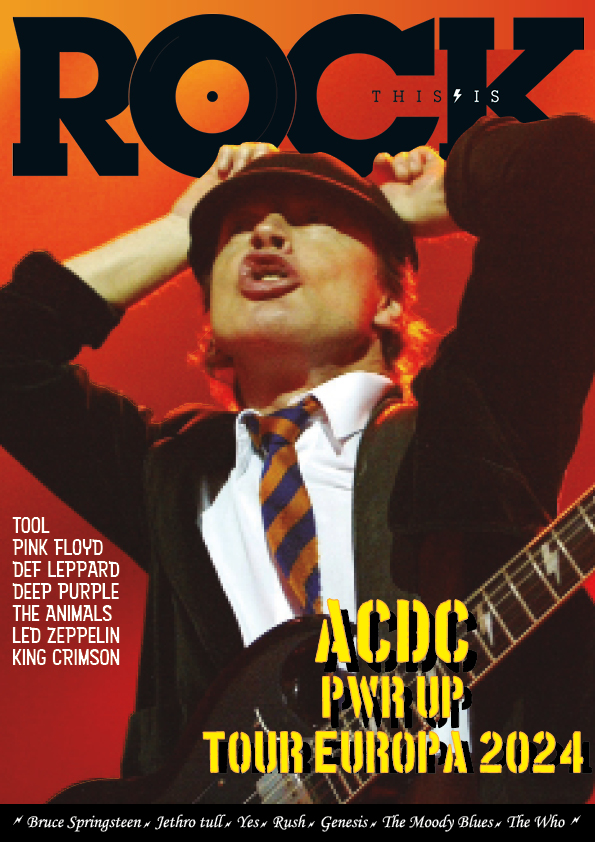

Portada de revista
La maquetación de la portada de la revista en InDesign para promocionar la gira de AC/DC en 2024 debería ser audaz, dinámica y emocionante, capturando la esencia del rock and roll y generando anticipación entre los lectores para el evento.
Creado con: